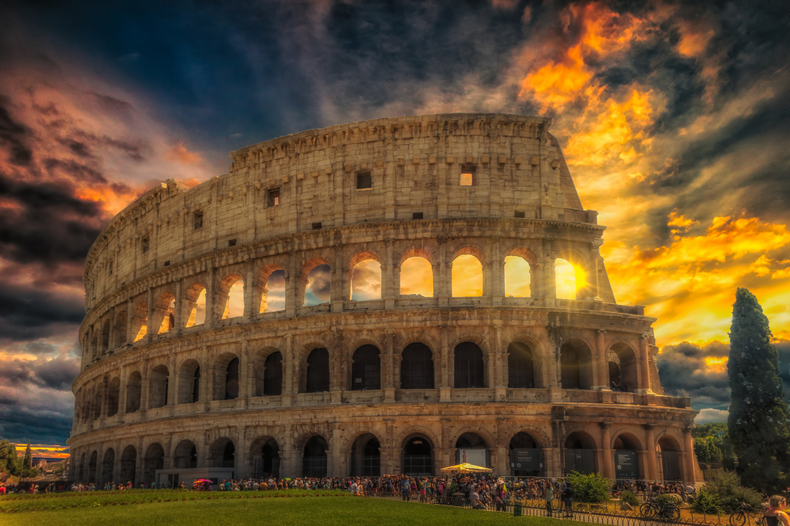
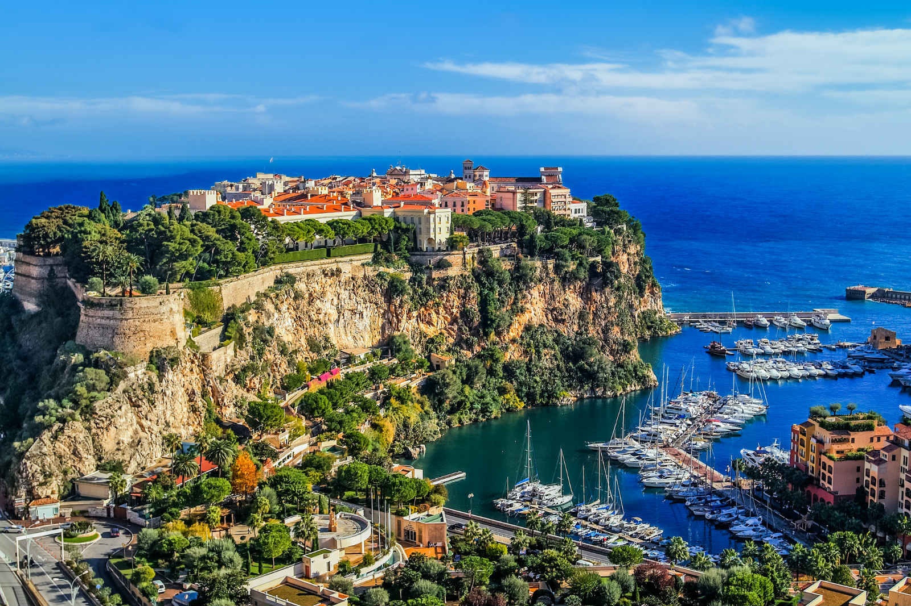
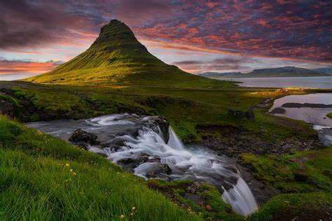
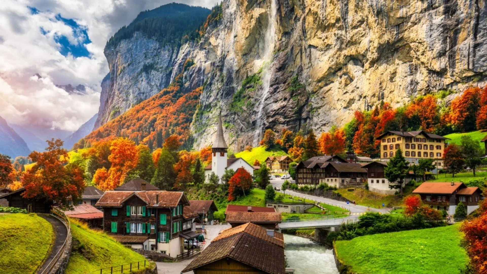

Olaszországban található a legtöbb UNESCO világörökségi helyszín.
Olaszországban van a legtöbb UNESCO világörökségi helyszín, ami gazdag történelmi és kulturális örökségének bizonyítéka.
Ezek a helyszínek az ókori római romoktól a reneszánsz művészetig terjednek, tükrözve Olaszországnak a világtörténelemre és kultúrára gyakorolt mélyreható hatását.

Monaco a legsűrűbben lakott ország.
Kis mérete ellenére Monaco büszkélkedhet a világ legnagyobb népsűrűségével, hiszen négyzetkilométerenként több mint 26 000 ember él itt.
Ez a sűrűség tükrözi Monaco státuszát, amely a francia Riviéra mentén fekvő pénzügyi, üzleti és turisztikai központ.

Izland kizárólag megújuló energiát használ.
Izland szinte teljes energiája megújuló forrásokból, elsősorban geotermikus és vízenergiából származik.
Ez a fenntarthatóság iránti elkötelezettség teszi Izlandot a megújuló energiafelhasználás és a környezetvédelem terén vezető szerepet betöltő országgá.

Svájc régóta fenntartja semlegességét.
Svájc világszerte elismert semlegessége miatt, mivel 1815 óta nem vett részt egyetlen külföldi háborúban sem.
Ez a politika lehetővé tette, hogy a nemzetközi diplomácia és szervezetek központjává váljon, hozzájárulva a békefenntartó hírnevéhez.
